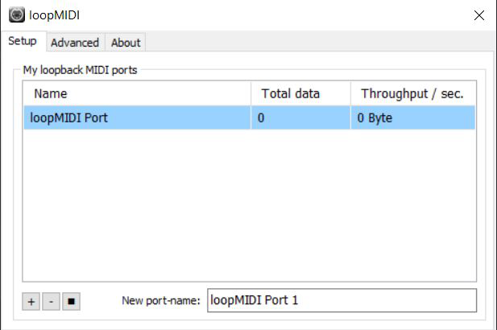
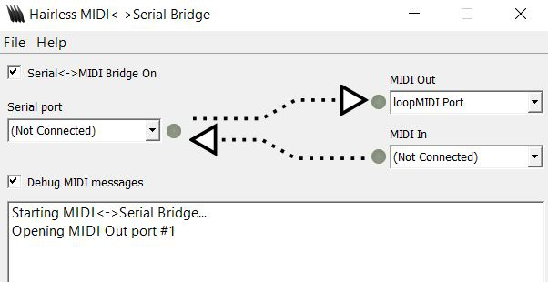
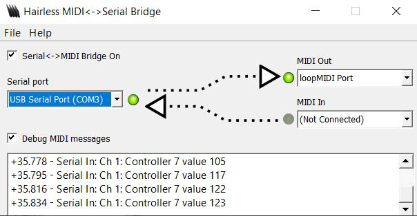
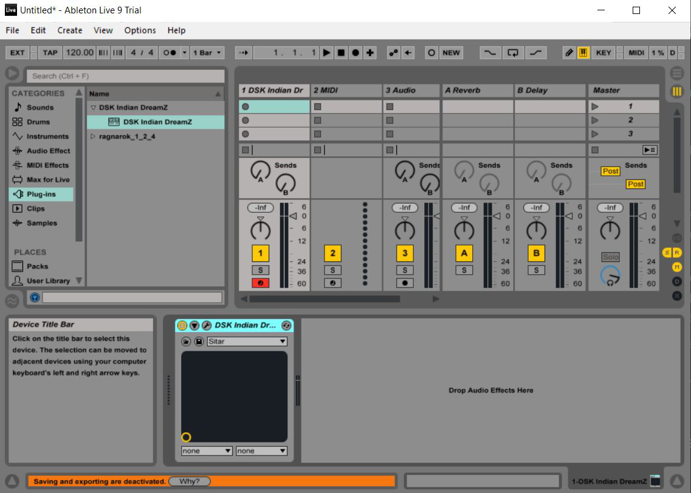
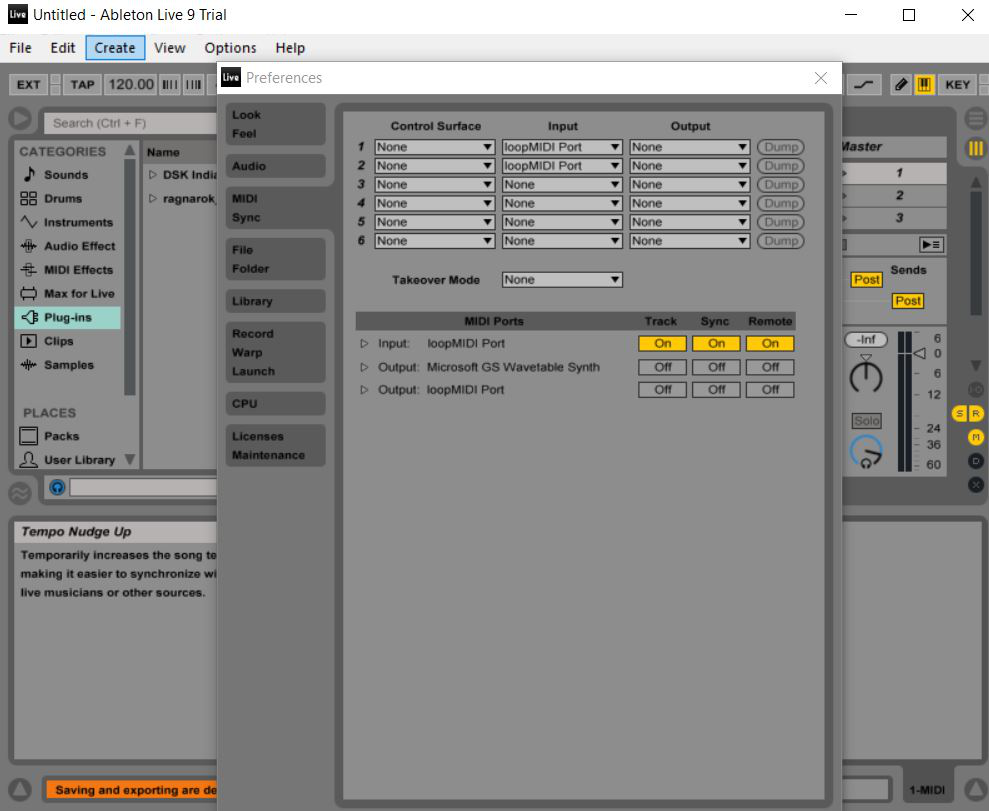
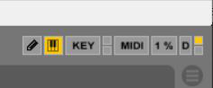
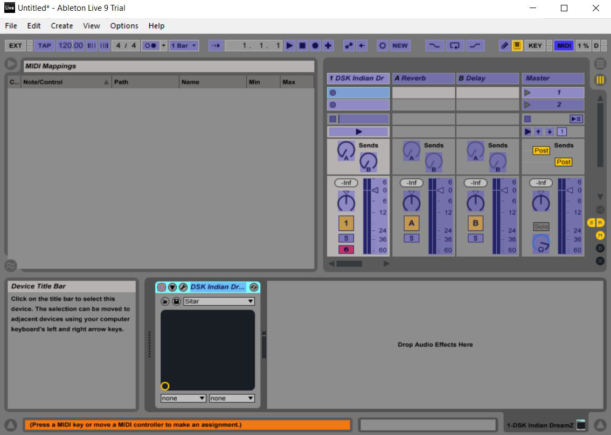

Software
Software used
- Ableton 9 DAW (Download here)
- Hairless MIDI<->Serial Bridge (Download here)
- loopmidi (Download here)
- e-Yantra IDE for eYFi Mega (a flavor of Arduino IDE)
Applications of different software
- Ableton 9 is a Digital Audio Workstation. It takes in MIDI messages as input, and then behaves accordingly to the specified messages. It is used for producing the sounds/music that we can hear. The MIDI controller does not produce music, it is this software that produces the notes/sounds.
- Loopmidi is used to create a virtual MIDI port. Since, we do not have a MIDI port in any conventional laptop, it is this virtual port through which the midi messages are passed to Ableton 9.
- Hairless MIDI<->Serial Bridge, as the name suggests acts as a bridge to convert the MIDI messages sent via serial port of the microcontroller to appropriate MIDI data, which is sent through the virtual port created by loopmidi and eventually interpreted by the DAW.
- e-Yantra IDE is a spinoff of traditional Arduino IDE, with custom bootloader for the eYFi Mega development board. It follows the same programming convention as Arduino IDE, and is used to upload programs to the eYFi Mega board.
Software Integration
Firstly, launch loopmidi and create a port. The default name of the port is loopMIDI Port.

Next launch Hairless MIDI<->Serial Bridge.

Select the serial port with which the board is connected. Also, select the MIDI Out port, The default port being loopMIDI Port. The MIDI messages can be debugged by ticking the Debug MIDI messages checkbox.

Now, launch Ableton 9.

Go to preferences to set the input MIDI port.

Now one would see incoming MIDI messages in the top right corner. A blinking light exhibits that Ableton 9 is receiving MIDI messages.

We can also map the inputs of the e-Yantra Midi Vaadan, with different parameters in Ableton 9. This can be done by clicking on the MIDI tab on top right corner. This will activate the MIDI mapping mode.

The ones highlighted in blue can be mapped. Just select any one of the highlighted parameter/controller, that needs to be manipulated by input, and then give certain input (for e.g, rotate a potentiometer, press a button), and it will get bound with the one in software.